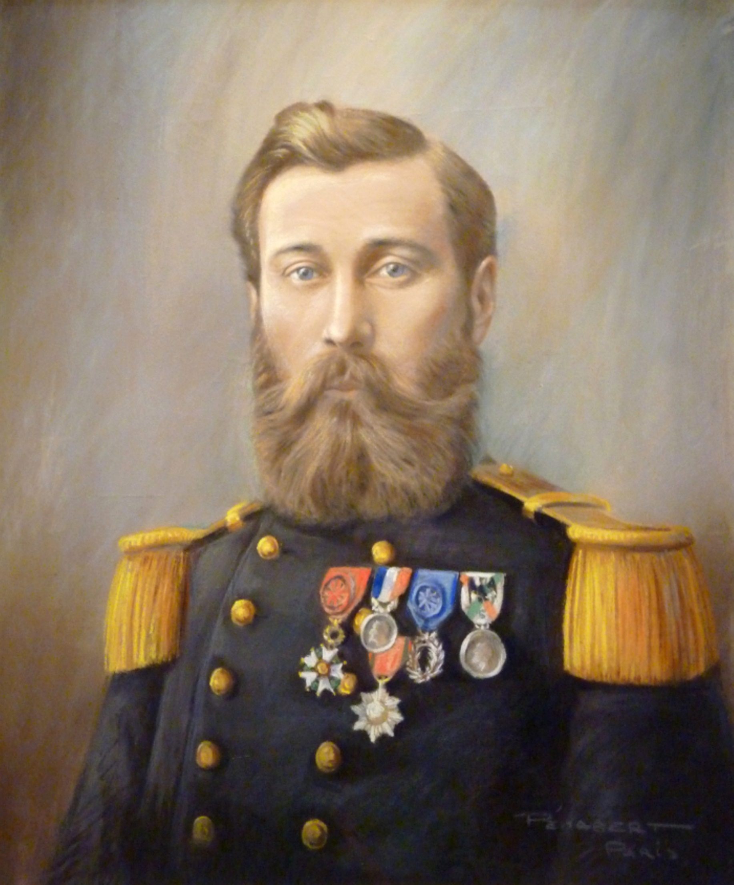
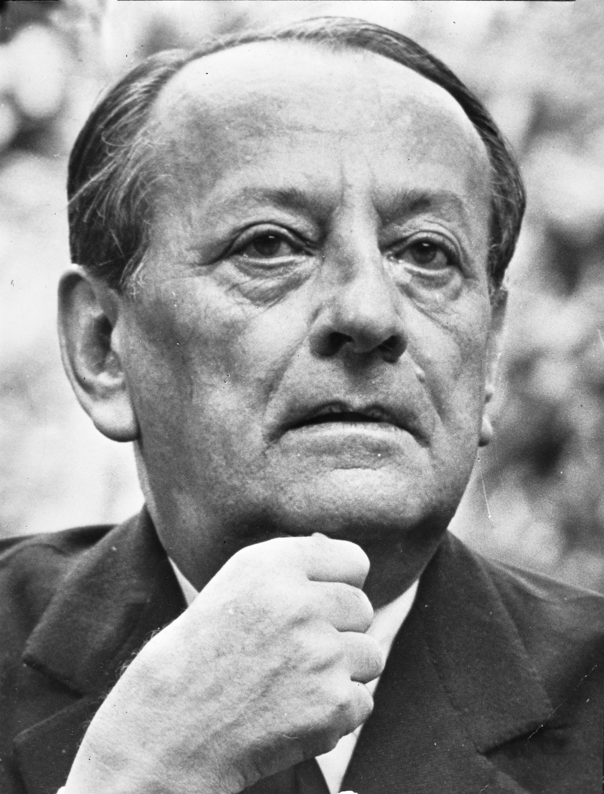
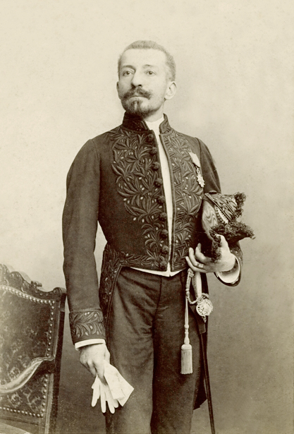
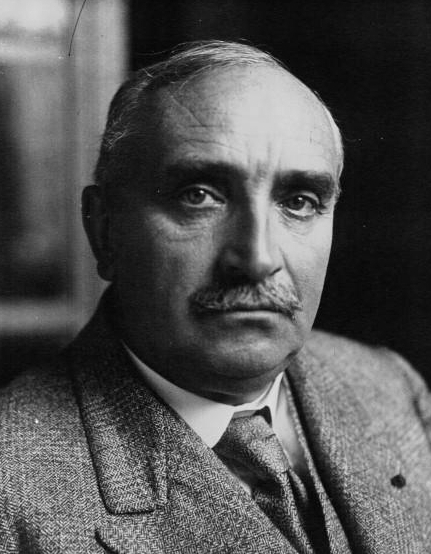

Voyageurs célèbre
Cette partie a pour but de donner une liste non exhaustif de personnages connus ayant visité Angkor durant leur existence.
- Louis Delaporte
- André Malraux
- Pierre Loti
- Zhou Daguan
- Paul Claudel
- Lucien Fournereau
- Voyage d'exploration en Indo-Chine, Paris 1873, avec Francis Garnier.
- Voyage au Cambodge, Paris, 1880, Éditions Delagrave [archive]. Livre réédité en 1999 par les éditions Maisonneuve et Larose
- Les monuments du Cambodge, Paris 1924 (2 vol.).
- Banteay Srei
- La voie Royale, 1930, Edition Grasset
- Bayon
- Baphuon
- Angkor Vat
- Terrasse des éléphants
- Ta Prohm
- Ta Keo
- La porte de la Victoire
- le Bayon
- Angkor Vat
- Les Ruines khmères du Cambodge siamois, Bulletin de la Société de géographie, vol.II, 1889, p. 242
- Les Ruines d'Angkor, étude artistique et historique, 1890
- Les Ruines Khmères, Cambodge et Siam, 1890
- Bangkok, Le Tour du monde, vol.II, 1894, p. 349-397
- Le Siam ancien, archéologie, épigraphie, géographie, 2 vol, Annales du Musée Guimet XXVII et XXXI, 1895-1908
Louis Delaporte (1842-1925)
Qui était-il ?
Explorateur Français du XIXème siècle, c’est très jeune qu’il décide de devenir marin. Pour concrétiser cette aspiration, il rentre à l'École navale de Brest en 1858. Nommé aspirant deux ans plus tard, il embarquera pour le Mexique pour sa première expédition.
Quel est son rapport avec le site d’Angkor ?
Recruté en 1866 pour l'Expédition française du Mékong ( mission d'exploration et de recherche des sources du fleuve ), c’est à cette occasion qu’il découvre le site d'Angkor. La découverte de ces ruines oubliées bouleverse profondément Delaporte et il décide alors de consacrer sa vie à faire connaître cette civilisation qu'il compare à la grandeur de la civilisation antique d'Égypte. Devenu passionné d'Angkor depuis son exposition au Cambodge, il ramènera une grande variété d'objets de l'empire Khmer de ses différentes expéditions ( 1866 à 1882 ). A la fin de sa carrière ne pouvant plus partir en expédition, il dédiera son temps au musée khmer de Compiègne où il travaillera en tant que conservateur.
Citation:
"Je ne pouvais contempler ces monuments… sans éprouver le vif désir de les faire connaître à l'Europe et d'enrichir nos musées d'une collection d'antiquités khmères dont la place était toute marquée à côté de celles de l'Egypte et de l'Assyrie." Voyage au Cambodge, Paris, 1880, Éditions Delagrave.
Quelques unes de ses oeuvres en rapport avec le site d’Angkor :
André Malraux (1901-1976)
Qui était-il ?
Ecrivain, homme politique et aventurier, il est considéré au comme l’une des plus grande conscience du XXème siècle
Quel est son rapport avec le site d’Angkor ?
Le 13 octobre 1923, André Malraux part à Siem Reap en compagnie de son épouse, Clara Malraux. Néanmoins, ce n’était pas pour une simple touriste mais pour y voler des bas-reliefs sur le site d’Angkor et les revendre en Occident pour combler ses manques d’argent. Arrivé sur place, Malraux et son équipe d’expédition y détachent près d’une tonne de pierres sculptées et quatre grands morceaux de bas-reliefs. De retour à Angkor, ils sont dénoncé à la police qui les condamnent à 3 ans de prison ferme. Sa peine sera ensuite réduite à 1 an et 8 mois de prison avec sursis.
Quelques unes de ses oeuvres en rapport avec le site d’Angkor :
Temple(s) visité(s) :
TousCitation:
« Tout aventurier est né d’un mythomane » -Malraux dans “La voie Royale”, 1930, Edition Grasset
Henri Mouhot (1826-1861)

Qui était-il ?
Explorateur et naturaliste français, il décide, après la lecture de The Kingdom and People of Siam: with a narrative of a mission to that country in 1855 de Sir John Bowring (1857), de partir à la découverte du Siam, du Cambodge et du Laos. Lors de son expédition au Cambodge il rencontre et devient l'ami des rois du Cambodge Ang Duong, qui régna jusqu'en 1860, puis Norodom. Durant les années 1859 - 1860, il explore et fait redécouvrir aux yeux des Occidentaux, le site d'Angkor.
Citation :
"Au lieu d'une déception, à mesure que l'on approche, on éprouve une admiration et un plaisir plus profonds. Ce sont tout d'abord de belles et hautes colonnes carrées, tout d'une seule pièce ; des portiques, des chapiteaux, des toits arrondis en coupoles ; le tout construit en gros blocs admirablement polis. taillés et sculptés. " Fin du chapitre 17 de Voyage dans les royaumes de Siam, de Cambodge, de Laos et autres parties centrales de l'Indo-Chine, Henri Mouhot.
Quelques unes de ses oeuvres en rapport avec le site d’Angkor :
Voyage dans les royaumes de Siam, de Cambodge, de Laos et autres parties centrales de l'Indo-Chine, L. Hachette (Paris), 1868 , Henri Mouhot.
Temple(s) visité(s) :
Tous
Pierre Loti (1850-1923)
Qui était-il ?
Romancier et Officier de marine Enfant, Pierre Loti rêvait de voir la cité d’Angkor. Ce n’est que bien longtemps après qu’il réalise son rêve lorsqu'en qualité de marin il voyage à travers le monde. En 1900, il est affecté sur le cuirassé "Redoutable" et c'est lors d'une escale en 1901 qu'il amarre sur les côtes Cambodgienne.
Citation :
"Ces enceintes colossales et ses tours, qui viennent de nous apparaître comme quelque mirage de la torride chaleur, ce n'est pas la ville même, mais seulement Angkor-Vat, son principal temple. La ville, Angkor Thom, on nous dit qu'elle gît plus loin, immense et imprécise, ensevelie sous la forêt tropicale." Le pèlerin d'Angkor, Pierre Loti.
Zhou Daguan 周达观 (1266-1346)

Qui était-il ?
Zhou Daguan 周达观 est un diplomate, géographe et écrivain chinois au service de l’empereur ChangZong des Yuan (元成宗).
Quel est son rapport avec le site d’Angkor ?
Zhou Daguan faisait parti d’une ambassade chinoise envoyée au Cambodge angkorien par l’empereur Changzong des Yuan (元成宗) en 1295. Zhou Daguan séjourna à Angkor pendant un an, à son retour il y dédie un ouvrage consacré à tous les aspects du Cambodge d’alors. A l’intérieur, 40 chapitres sont dédiés à la monarchie, la noblesse, aux fonctionnaires, aux petit peuple, aux habitats, à la nourriture, à l’agriculture, aux saisons, aux écritures, à la langue ou encore à l’habillement. Ce livre constitue donc une description complète et fiable de ce qui était à l’époque, le plus grand empire d’Asie du Sud-Est.
Citation:
Zhou Daguan et Paul Pelliot, Mémoires sur les coutumes du Cambodge de Tcheou Ta-Kouan, vol. 3, Adrien Maisonneuve, coll. « Œuvres posthumes » Paul Pelliot a traduit les livres de Zhou Daguan -Mémoires sur les coutumes du Cambodge
Temple(s) visité(s) :
Paul Claudel (1868-1955)
Qui était-il ?
Paul Claudel était un dramaturge, poète, essayiste et diplomate français. Après le concours des Affaires étrangères, il devient l’ambassadeur de la France au Japon. Elu à l’Académie française en 1946, il va consacrer le reste de sa vie à l’étude de textes bibliques.
Quel est son rapport avec le site d’Angkor ?
En route pour le Japon, il passe par le Cambodge et plus précisément par Angkor. Dans son journal, il fait part de son ressenti vis à vis des temples. Pour lui, le mal jaillit de partout à Angkor, les cinq tours d’Angkor Vat sont comparées à des ananas blasphématoires.
Citation:" Angkor est bien un des endroits les plus maudits, les plus maléfiques que je connaisse. J'en étais revenu malade et la relation que j'avais faite de mon voyage a péri dans un incendie. " (Cahier V, 1925)
Quelques unes de ses oeuvres en rapport avec le site d’Angkor :
Journal, Cahier IV, octobre 1921
Temple(s) visité(s) :
Lucien Fournereau (1846-1906)
Qui était-il ?
Michel Louis Lucien Fournereau est un explorateur et archéologue français, de 1886 à 1888 il est chargé de plusieurs expéditions archéologiques en Indochine.
Quel est son rapport avec le site d’Angkor ?
Lors de son expédition en Indochine, il se spécialise dans le secteur de Siem Reap et étudie en détail l’ancienne ville d’Angkor Thom. Il prend aussi de nombreuses photographies du site et établit des moulages de sculptures destinés au Musée du Trocadéro.
Quelques unes de ses oeuvres en rapport avec le site d’Angkor :
Temple(s) visité(s) :
Tous